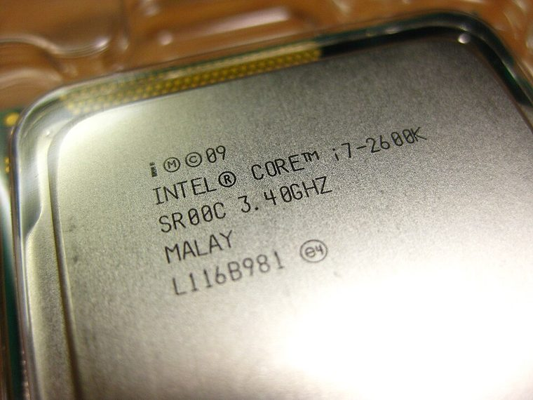

[ INDIVIDUAL CPU COMPONENT ]
Intel Core i7-2600K
Sandy Bridge unlocked desktop, 2011; 4C/8T, 3.4/3.8 GHz, 8 MB cache, 95 W, HD 3000. Model-specific record; confirm the complete part marking before installation.

IDENTIFICATION: Intel Core i7-2600K. Product name alone does not establish package, stepping, voltage or firmware compatibility.
Verified model specifications
| Catalog path | Intel → Core desktop generations |
|---|---|
| Model and compute | Sandy Bridge unlocked desktop, 2011; 4C/8T, 3.4/3.8 GHz, 8 MB cache, 95 W, HD 3000 |
| Package / socket | LGA1155 |
| Compatibility | Supported 6/7-series BIOS only; not LGA1156 |
| Stepping and variants | K unlocked SKU; verify S-spec and BIOS microcode |
Compatibility and service
- Supported 6/7-series BIOS only; not LGA1156
- K unlocked SKU; verify S-spec and BIOS microcode
- Record overclock/power settings and cooler; preserve package marking
- Confirm board manual, exact CPU support list, firmware, voltage/power, memory and cooling before use; never force a package.
Service & archival notes
Record overclock/power settings and cooler; preserve package marking
Photograph package, markings, contacts and date/lot codes before repair. Log host board, BIOS/microcode, memory, cooler, condition, provenance and source revision.
Sources & further reading
- Intel ARK — Intel Core i7-2600KManufacturer specifications; search exact model and package S-spec.
- Intel processor architecture manualsManufacturer reference for architecture and instruction behavior.
- Various Creators — The i7-2600K is now 15 years old! How's it holding up nowadays? | 35 games testedIndependent video review; treat as supplementary context, not primary manufacturer documentation.
Manufacturer documents take precedence. Family-level references may not resolve every stepping; verify the marking and motherboard CPU list.